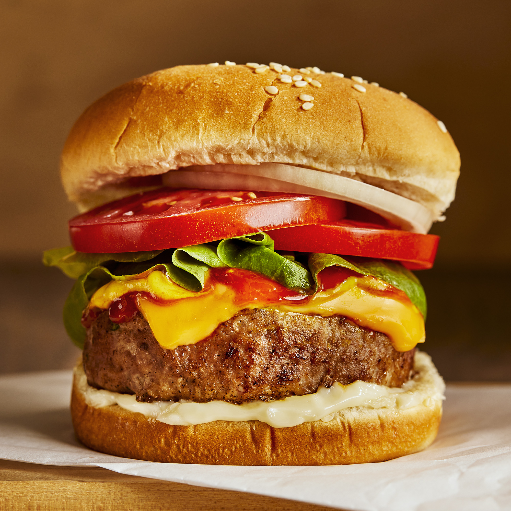

Turkey Burguer

Best turkey burguer ever
This is the best turkey burger recipe. After making them the first time my husband said 'no more' to beef burgers. These are really good - any cooking method may be used, and they freeze very well. The recipe can also be used for meatballs or meatloaves
Ingredients
- 3 pounds ground turkey
- 1/4 cup seasoned bread crumbs
- 1/4 cup finely diced onion
- 2 egg whites, lightly beaten
- 1/4 cup chopped fresh parsley
- 1 clove garlic, peeled and minced
- 1 teaspoon salt
- 1/4 teaspoon ground black pepper
Steps
- Mix ground turkey, seasoned bread crumbs, onion, egg whites, parsley, garlic, salt, and pepper together in a large bowl.
- Form into 12 patties.
- Cook the patties in a medium skillet over medium heat, turning once, to an internal temperature of 180 degrees F (85 degrees C).